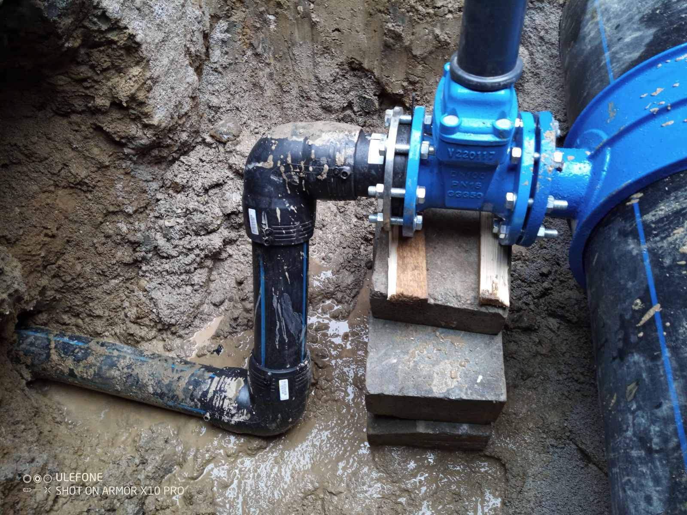
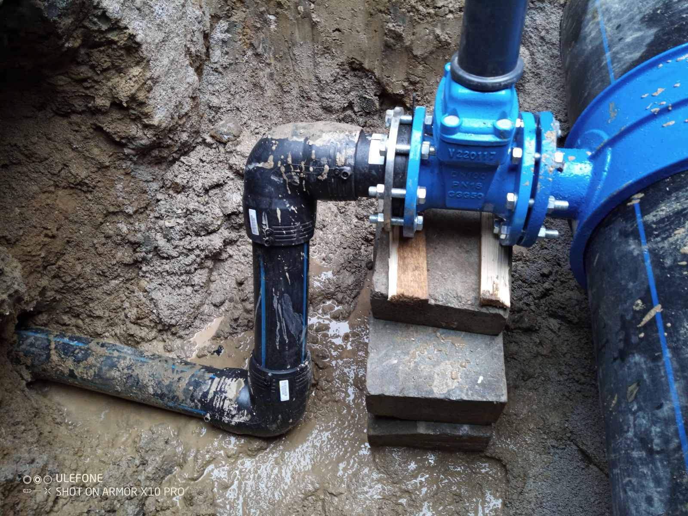

ВиК проектиране и изпълнение
Професионално ВиК проектиране и изпълнение – от първоначален инженерeн оглед до напълно изградена и тествана инсталация. Извършваме хидравлични изчисления, избор на материали и цялостно изграждане на водопроводни и канализационни системи.
Свържете се с насПълно ВиК проектиране и изграждане на инсталации
Извършваме цялостно проектиране и изграждане на ВиК инсталации за жилищни, търговски и индустриални обекти. Следваме строги инженерни методики и гарантираме дълъг експлоатационен живот.
Инженерен анализ
Прецизно заснемане на обекта и първоначално обследване.
Проект & чертежи
Пълни технически проекти, схеми и блок-схеми.
Монтаж & материали
Контрол на материали, монтаж по график и завършване.
Етапи на изпълнение
Оглед и заснемане
Полеви измервания, анализ и заснемане на съществуващите връзки.
Проекти и чертежи
Стандартизирани чертежи, схеми и документация за одобрение.
Доставка и монтаж
Избор на сертифицирани материали и монтаж по график.
Тестове и протоколи
Хидравлични изпитвания, протоколи и предаване на готовия обект.
 

Готови сме да започнем Вашия проект още днес
Свържете се с нас за оглед и конкретна оферта.
Свържете се